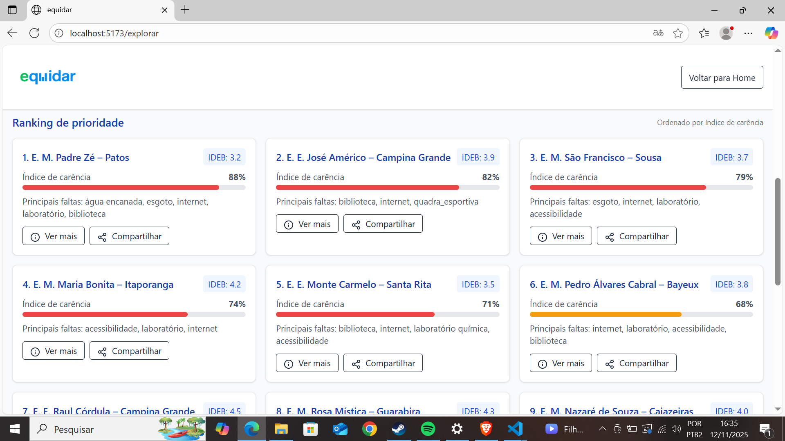

Equidar
Not every school starts from the same place. Equidar makes that gap visible.

Equidar is a website that scores public schools in Paraíba according to the resources they have — and, more importantly, the ones they don’t. Running water, sewage, internet, a library, a science lab, accessibility: each school gets a deprivation index built from what is missing.
Schools are ranked by that index, so the ones in greatest need show up first. Each card lists the school’s city, its IDEB score and its main gaps, which puts infrastructure and learning outcomes side by side instead of in separate spreadsheets.
The goal is simple: give public managers, teachers and communities a clear starting point for where investment would make the biggest difference, and make each result easy to share.